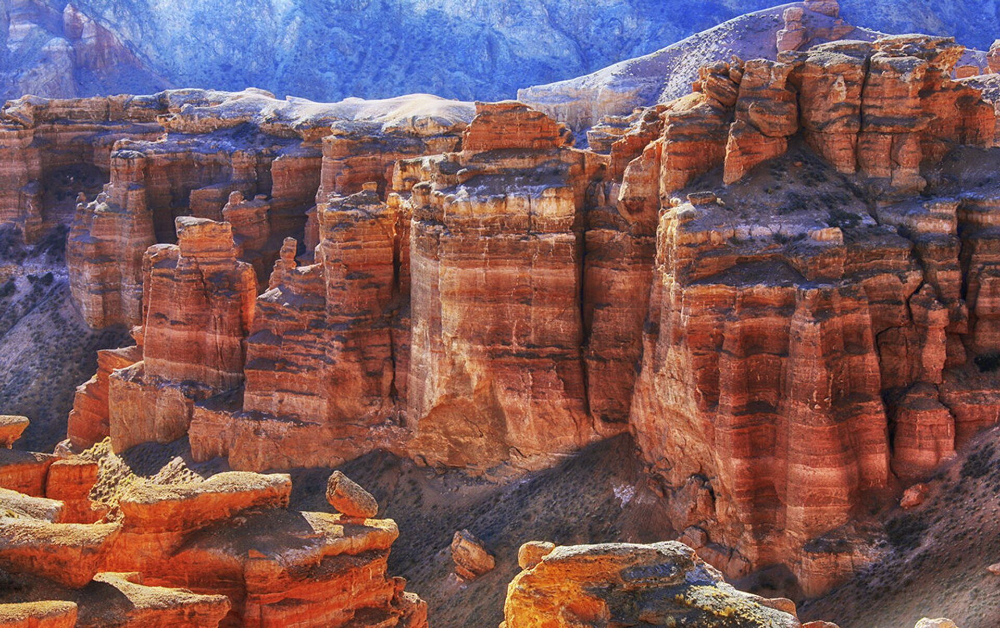
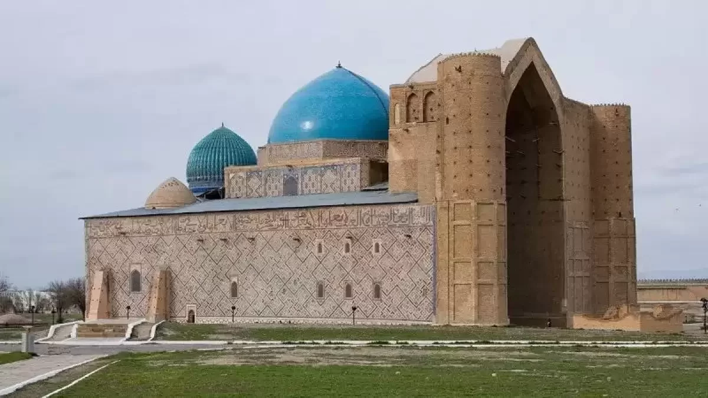
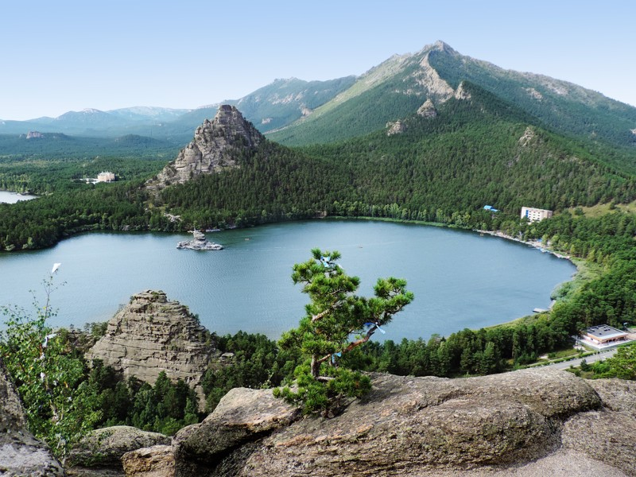

Достопримечательности

Чарынский каньон
Уникальный природный памятник с невероятными пейзажами, напоминающими Гранд-Каньон.

Мавзолей Ходжи Ахмеда Яссауи
Величественный памятник средневековой архитектуры в городе Туркестан.

Бурабай
Бурабай – 1910 жылдан бері Қазақстанның Ақмола облысындағы климаттық-емдік курорт. Боровская ауыл әкімшілігінің әкімшілік орталығы. Аттас көлдің жанында тұрғызылған. Санаторийлер, балшық ванналары және т.б. Маусым: жыл бойы.

Алматы маңындағы Қазақстандағы Қайыңды көлі батқан орман
Қайыңды – Қазақстанның Алматы облысындағы бөгетпен жабылған көл, Күнгей Алатау шатқалдарының біріндегі танымал туристік орын. Көлдің басты көрікті жері – судан тура көтерілген шыршалар.